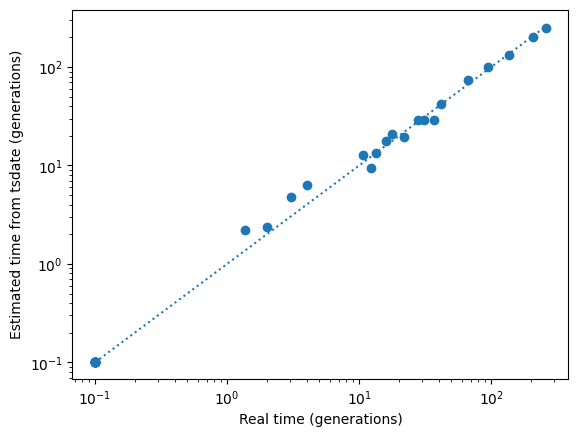
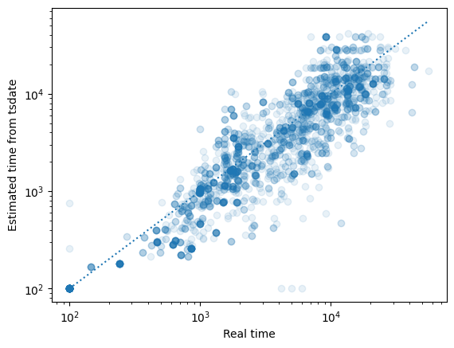

Usage#
We’ll first generate a few “undated” tree sequences for later use:
Show code cell source
import warnings
warnings.simplefilter(action='ignore', category=FutureWarning) # don't display FutureWarnings for stdpopsim
import msprime
import numpy as np
import stdpopsim
import tsinfer
import tskit
# Use msprime to create a simulated tree sequence with mutations, for demonstration
n = 10
Ne = 100
mu = 1e-6
ts = msprime.sim_ancestry(n, population_size=Ne, sequence_length=1e6, random_seed=123)
ts = msprime.sim_mutations(ts, rate=mu, random_seed=123, discrete_genome=False)
# Remove time information
tables = ts.dump_tables()
tables.nodes.time = np.where(tables.nodes.flags & tskit.NODE_IS_SAMPLE, 0, np.arange(ts.num_nodes, dtype=float))
tables.mutations.time = np.full(ts.num_mutations, tskit.UNKNOWN_TIME)
tables.time_units = tskit.TIME_UNITS_UNCALIBRATED
sim_ts = tables.tree_sequence()
# Use stdpopsim to create simulated genomes for inference
species = stdpopsim.get_species("HomSap")
model = species.get_demographic_model("AmericanAdmixture_4B11")
contig = species.get_contig("chr1", left=1e7, right=1.1e7, mutation_rate=model.mutation_rate)
samples = {"AFR": 5, "EUR": 5, "ASIA": 5, "ADMIX": 5}
# Create DNA sequences, stored in the tsinfer SampleData format
stdpopsim_ts = stdpopsim.get_engine("msprime").simulate(model, contig, samples, seed=123)
sample_data = tsinfer.SampleData.from_tree_sequence(stdpopsim_ts)
inf_ts = tsinfer.infer(sample_data)
print(f"* Simulated `sim_ts` ({2*n} genomes from a popn of {Ne} diploids, mut_rate={mu} /bp/gen)")
print(f"* Inferred `inf_ts` using tsinfer ({stdpopsim_ts.num_samples} samples of human {contig.origin})")
* Simulated `sim_ts` (20 genomes from a popn of 100 diploids, mut_rate=1e-06 /bp/gen)
* Inferred `inf_ts` using tsinfer (40 samples of human chr1:10000000-11000000)
Quickstart#
Given a known genetic genealogy in the form of a tree sequence, tsdate simply
re-estimates the node times based on the mutations on each edge. Usage is as
simple as calling the date() function with an estimated effective population
size, and estimated per base pair per generation mutation rate.
import tsdate
# Running `tsdate` is usually a single function call, as follows:
redated_ts = tsdate.date(sim_ts, population_size=100, mutation_rate=1e-6)
This simple example has no recombination, infinite sites mutation, a high mutation rate, and a known genealogy, so we would expect that the node times as estimated by tsdate from the mutations would be very close to the actual node times, as indeed they seem to be:
Show code cell source
from matplotlib import pyplot as plt
import numpy as np
def plot_real_vs_tsdate_times(x, y, ts_x=None, ts_y=None, delta = 0.1, **kwargs):
plt.scatter(x + delta, y + delta, **kwargs)
plt.xscale('log')
plt.xlabel(f'Real time' + ('' if ts_x is None else f' ({ts_x.time_units})'))
plt.yscale('log')
plt.ylabel(f'Estimated time from tsdate' + ('' if ts_y is None else f' ({ts_y.time_units})'))
line_pts = np.logspace(np.log10(delta), np.log10(x.max()), 10)
plt.plot(line_pts, line_pts, linestyle=":")
plot_real_vs_tsdate_times(ts.nodes_time, redated_ts.nodes_time, ts, redated_ts)

Note
See the Timescale adjustment section if you wish to
use anything other than the default time_units="generations".
Inferred topologies#
A more typical use-case is where the genealogy has been inferred from DNA sequence data,
for example by tsinfer or
Relate. Below we will demonstrate with tsinfer
output based on DNA sequences generated by a more realistic simulation.
With real data, especially from tsinfer you may want to preprocess
the tree sequence before dating. This removes regions with no variable sites, and
also simplifies to remove locally unary portions of nodes (see the
Simplification and unary nodes section below for more details)
import tsdate
simplified_ts = tsdate.preprocess_ts(inf_ts)
dated_ts = tsdate.date(simplified_ts, population_size=10000, mutation_rate=model.mutation_rate)
print(
f"Dated `inf_ts` (inferred from {inf_ts.num_sites} variants under the {model.id}",
f"stdpopsim model, mutation rate = {model.mutation_rate} /bp/gen)"
)
Dated `inf_ts` (inferred from 3912 variants under the AmericanAdmixture_4B11 stdpopsim model, mutation rate = 2.36e-08 /bp/gen)
Note
There was not a fixed population size in the simulation used to generate the data, so we have used a rough commonly-used estimate of an human effective population size of 20,000 (see the Variable population sizes section for more sophisticated approaches).
The inference in this case is much more noisy (as illustrated using the original and inferred times of the node under each mutation):
Show code cell source
# If there are multiple mutations at a site, we simply pick the first one
plot_real_vs_tsdate_times(
stdpopsim_ts.nodes_time[[s.mutations[0].node for s in stdpopsim_ts.sites()]],
dated_ts.nodes_time[[s.mutations[0].node for s in dated_ts.sites()]],
delta=100,
alpha=0.1,
)

Posterior time distributions#
The default output of tsdate is a new, dated tree sequence,
created with node times changed to the mean time for each node. This is based
on the means of the posterior time distributions for each node.
In the unusual occurrence of the mean time of a child node being older than the mean time of on of its parents, a small value, \(\epsilon\), is added to the parent time to ensure a valid tree sequence. The original mean times and their variances are stored in the node Metadata.
The full posterior distributions of times for each node can be accessed by
specifying return_posteriors=True
when calling tsdate.date(), which then returns both the dated tree sequence
and a dictionary specifying the posterior distributions.
The returned posterior is a dictionary keyed by integer node ID, with values representing the probability distribution of times. This can be read in to a pandas dataframe:
import pandas as pd
redated_ts, posteriors = tsdate.date(
sim_ts, population_size=100, mutation_rate=1e-6, method="inside_outside", return_posteriors=True)
posteriors_df = pd.DataFrame(posteriors)
posteriors_df.head() # Show the dataframe
| 20 | 21 | 22 | 23 | 24 | 25 | 26 | 27 | 28 | 29 | 30 | 31 | 32 | 33 | 34 | 35 | 36 | 37 | 38 | time | |
|---|---|---|---|---|---|---|---|---|---|---|---|---|---|---|---|---|---|---|---|---|
| 0 | 0.000000 | 0.000000 | 0.000000 | 0.000000e+00 | 0.000000e+00 | 0.000000e+00 | 0.000000e+00 | 0.000000e+00 | 0.000000e+00 | 0.000000e+00 | 0.000000e+00 | 0.000000e+00 | 0.000000e+00 | 0.000000e+00 | 0.000000e+00 | 0.0 | 0.0 | 0.0 | 0.0 | 0.000000 |
| 1 | 0.100264 | 0.079272 | 0.000067 | 1.076798e-07 | 1.319789e-61 | 1.323093e-16 | 1.824140e-92 | 1.560503e-101 | 6.190844e-184 | 5.428899e-132 | 0.000000e+00 | 0.000000e+00 | 1.783687e-63 | 0.000000e+00 | 0.000000e+00 | 0.0 | 0.0 | 0.0 | 0.0 | 0.914053 |
| 2 | 0.177675 | 0.152645 | 0.001058 | 7.372226e-06 | 4.067750e-20 | 4.385752e-13 | 7.571748e-23 | 6.000761e-56 | 2.922087e-46 | 1.407553e-49 | 2.662055e-153 | 1.528618e-214 | 3.448580e-54 | 0.000000e+00 | 7.531673e-314 | 0.0 | 0.0 | 0.0 | 0.0 | 1.348584 |
| 3 | 0.201634 | 0.186804 | 0.005519 | 1.019018e-04 | 7.638410e-17 | 8.197991e-11 | 2.949506e-18 | 1.356753e-36 | 5.782621e-38 | 2.520780e-43 | 6.473164e-77 | 2.943222e-113 | 4.965404e-48 | 0.000000e+00 | 4.739415e-261 | 0.0 | 0.0 | 0.0 | 0.0 | 1.751783 |
| 4 | 0.182755 | 0.182299 | 0.017493 | 6.918350e-04 | 1.796166e-14 | 4.360474e-09 | 2.368280e-15 | 2.328367e-31 | 8.846950e-33 | 3.131357e-38 | 7.173261e-68 | 2.373294e-98 | 3.229263e-43 | 5.408274e-221 | 1.455132e-234 | 0.0 | 0.0 | 0.0 | 0.0 | 2.155214 |
Since we are using a Discrete-time method, each node
(numbered column of the dataframe) is associated with a vector of probabilities
that sum to one: each cell gives the probability that the time of the node
whose ID is given by the column header lies at the specific timepoint
given by the time column.
For the continuous-time variational_gamma method, the posterior for
each node is represented by the shape and rate parameter of the gamma approximation,
as described by the parameter column.
Population sizes#
The population_size can either be a single number, specifying the “effective population size”,
or a piecewise constant function of time, specifying a set of fixed population sizes
over a number of contiguous time intervals. Functions of this sort are captured by the
PopulationSizeHistory class: see the Variable population sizes page
for its use and interpretation.
If you don’t have an established estimate for the effective population size of your data, a rough approximation is to use the (sitewise) genetic diversity divided by four-times the mutation rate:
print("A rough estimate of the effective population size is", sim_ts.diversity() / (4 * 1e-6))
A rough estimate of the effective population size is 61.39868421052534
Timescale adjustment#
There is one gotcha involving the population size and the assumed time units used for dating,
because theoretically, the effective population size determines the coalescent timescale.
If you are using a time scale other than “generations”, as well as setting the “time_scale”
parameter (e.g. to “years”), and quoting parameters such as mutation_rate in terms of a
per-bp per-year rate, you will also need to modify the effective population size passed to
tsdate by multiplying it by the generation time. For example:
import numpy as np
popsize = 100 # Diploid population size
mutation_rate_per_gen = 1e-8
# By default, dates are in generations
ts_generations = tsdate.date(ts, mutation_rate_per_gen, popsize)
# To infer dates in years, adjust both the rates and the population size:
generation_time = 30 # Years
mutation_rate_per_year = mutation_rate_per_gen / generation_time
ts_years = tsdate.date(
ts, mutation_rate_per_year, popsize * generation_time, time_units="years")
# Check that the inferred node times are identical, just on different scales
assert np.allclose(ts_generations.nodes_time, ts_years.nodes_time / generation_time, 5)
Real data#
Real world data is likely to consist of larger datasets than in the example, and may exhibit issues that are not present in simulated data and can e.g. cause numerical instability and other problems. Here we detail some common issues found in real data.
Memory and run time#
tsdate can be run on most modern computers: large tree sequences of millions or
tens of millions of edges will take of the order of hours, and use
tens of GB of RAM (e.g. 24 GB / 1 hour on a 2022-era laptop
for a tree sequence of 5 million edges covering
60 megabases of 7500 samples of human chromosome 6 from Wohns et al. [2022]).
Todo
Add some scaling plots. Some real-world examples: a dataset of 10K samples of half a
million sites (~4M edges) on one node of a
2023 Intel Platinum cluster takes ~30 mins (20GB max memory) for the inside-outside
method and ~10 mins (1.5GB max memory) using the variational_gamma method.
Running the dating algorithm is linear in the number of edges in the tree sequence.
This makes tsdate usable even for vary large tree sequences (e.g. millions of samples).
For large instances, if you are running tsdate interactively, it can be useful to
specify the progress option to display a progress bar telling you how long
different stages of dating will take.
If the method used for dating involves discrete time slices, tsdate scales
quadratically in the number of time slices chosen. For greater temporal resolution,
you are thus advised to use the variational_gamma method, which does not discretise time.
Optimisations#
Before the dating algorithm is run, the conditional coalescent prior distribution must
be calculated for each node. Although this is roughly linear in the number of nodes,
it can still take some time if there are millions of nodes.
To speed up this process an approximation to the conditional coalescent
is used for nodes which have a large number of descendants
(the exact number can be modified by making a prior
using the approx_prior_size parameter).
The results of this approximation are cached, so that tsdate will run slightly faster
the second time it is run.
The time taken to date a tree sequence using tsdate is only a fraction of that
requires to infer the initial tree sequence, therefore the core tsdate algorithm
has not been parallelised to allow running on many CPU cores. However, there is some
precalculation of regularly reused mutational likelihoods which can be parallelised
easily: this step can be sped up by specifying the num_threads parameter to
date() (however, this behaviour is subject to change in future versions).
CLI use#
Computationally-intensive uses of tsdate are likely to involve
running the program non-interactively, e.g. as part of an
automated pipeline. In this case, it may be useful to use the
command-line interface. See Command line interface for more details.
Numerical stability and preprocessing#
Numerical stability issues are usually caused by “bad” tree sequences (i.e. pathological combinations of topologies and mutations). These can be caused, for example, by long deep branches with very few mutations, such as samples attaching directly to a local root. These can often be fixed by removing bad regions of the tree sequence, e.g. regions that have no variation because they are unmappable or have been removed by a QC filter, such as at the centromere. Numerical instability will manifest itself by raising an error when dating.
The tsdate.preprocess_ts() function can help remove topology from these
regions. See the documentation for that function for details on how to increase
or decrease its stringency.
The variational_gamma method is more prone to
instability, and switching to another method may help. Note, however, that this is usually
a sign that you should re-inspect the original tree sequence, which is likely to
have poorly inferred topologies.
Simplification and unary nodes#
Above we have simplified the tree sequence to remove “locally unary” nodes
(i.e. nodes that, in some trees, have only one child). The tsinfer
algorithm produces these by default, but often overestimates the span of genome
that they cover, which causes numerical instability and inaccuracy.
However, we expect accurately estimated unary regions to improve dating.
It is therefore possible to date a tree sequence containing locally unary nodes
using the allow_unary option when building a prior.